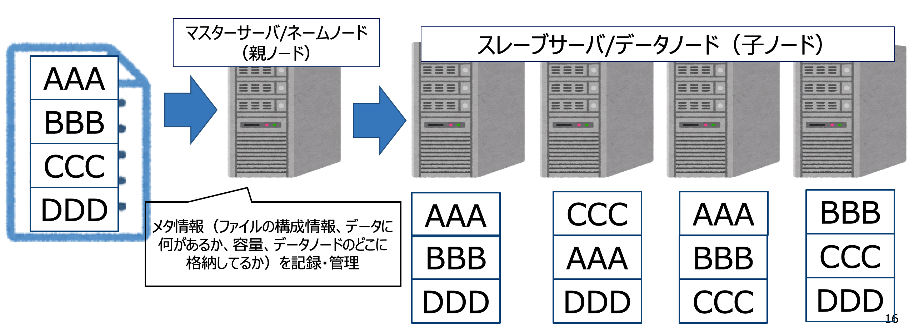

Hadoopとその周辺の技術について
Hadoopとその技術レイヤーについて
BigDataはRDBMSでないとだめか？
BigDataは今後の事業貢献や継続アプローチとしても欠かせません。そこで素朴な質問です。多くの人は「BigDataはRDBMSでないとだめか？」と問いますが、答えはデータサイズに伴うI/O性能の限界に伴う問題です。
例えばの話、MySQL、PostgreSQL、SQL Server、OracleなどRDBMSでHDDに200TB分のデータがあるとして、HDDは今でも最大100MB/秒でデータを読み込むため、200TBのデータを読み込むために200×1000×1000 / 100 = 2000000秒、約23日と時間がかかります。SSDも同様です。
この問題を解決するために、Hadoopなど並列分散処理が必要になります。
>ただし、(後述しますが)HadoopはサーバとサーバをNW接続しながら分散処理する一方、RDBMSやNoSQLはストレージと隣接するためORM（レスポンス）に特化しており、数百人以上の同時操作などオペレーション系業務では性能要件を満たしてるため、TBまでの少ないデータ量であればまだ現役です。

BigDataを支える技術レイヤー:Hadoop
通常、データ量が100TB、1PBと多いほどI/O処理から取得や更新にどうしても時間がかかります。それを解決するためにApache Hadoopというオープンソースプラットフォームが登場しました。Hadoopは１つのマスタサーバ/ネームノードと、複数のスレーブサーバ/データノードをhostで接続しながら、マスタサーバ/ネームノードの指示によりデータストレージとデータ処理に対しスケーラブルながら分散処理、そしてフォールトトレラントによる耐性障害を備っています。

BigDataを支える技術レイヤー:HDFS
Hadoopの分散ファイルシステムとしてHDFS（Hadoop Distributed（分散） File（ファイル） System（システム））があります。こちらはHadoopら大規模データを前提に開発されたものです。大量のデータをブロック単位で分割し多数のノードに3つのレプリカとして重複保存されます。そのため、1つのサーバが壊れても、通じて生きてるサーバが自動で複製、データは常に３つのレプリカがあるよう保ってくれるので、障害にも強いです。

BigDataを支える技術レイヤー:MapReduce
Hadoop、HDFSだけでも運用できますが、データ取得や更新時はHDFS同期処理、障害問題、ネットワーク帯域負荷問題があります。それを解決するのがMapReduceという並列分散処理です。例えば、選挙の投票用紙を集計し結果を表示する流れをMapReduceで位置づけすると、以下のような図になります。投票箱にて投稿したデータは、それぞれのスタッフが分散して（Map/Shuffle/Reduce）の3パートに区切って集計するのと同じようなイメージになります。ここで言うスタッフはスレーブサーバ/データノードの位置付けで、スレーブサーバ/データノード（スタッフ）は処理の際、ノード（Disk）へ記録するため、が万が一傷害など有事に遭遇しても、代わりのスレーブサーバ/データノード（スタッフ）が引き継いて作業を行うことができます。

BigDataを支える技術レイヤー:YARN
MapReduceがあることで並列分散処理が出来ました。しかし、MapReduceは親ノードが子ノード（データノード）にプログラムを送信して計算処理するため、データを持ってないノード含め全送信するなど、処理速度・I/O負荷の面で課題があります。それを解決するためにYARNが登場しました。YARNはYet-Another-Resource-Negotiatorの略称、汎用的なクラスタリソース管理フレームワークです。YARNはリソースをによって効率的な計算処理送信で無駄を省くため、処理速度の向上・I/O負荷が減ります。そのため、YARNはMapReduce処理、Spark Streamingのようなストリーミング処理など、様々なMapReduce処理内容に応じてHadoopクラスタ(HDFS)上で効率よく並列分散処理を実現することができます。
上記のMapReduceを選挙集計で例えたものに、YARNを追加してみます。その場合、以下のストーリーになります。
スレーブサーバ/データノード（スタッフ）はリソース（人手）が限られてるため、YARNのResourceManager（管理者）が
- 実際に処理したい内容を全体で確認します。今回はAさんのみ集計したいので、Aさん以外は無視しAさんのみを集計します。
- ResourceManager（管理者）にて、処理したい内容を実現するためには、スレーブサーバ/データノード（スタッフ）でどれぐらいのリソースが必要かを事前確認します。
- それぞれのスレーブサーバ/データノード（スタッフ）にリソース割り当てを実施します。
- ResourceManager（管理者）にて、スレーブサーバ/データノード（スタッフ）の処理リソース割り当てができたら、分散・リソース処理を実施します。今回はAさんのみ集計なので、Aさんに集中、そのため全スレーブサーバ/データノード（スタッフ）のI/O負荷を総合的に減らすことができます。

BigDataを支える技術レイヤー:Apache Hive
MapReduceによって並列分散処理が簡単になりましたが、こちらは基本的にはJavaで書かなければならないことや、処理の都度コンパイルするなど、各自MapReduce処理の実装が大変という問題がありました。それを解決するためにApache Hiveが登場しました。SQLクエリ言語を書くだけで、Hiveサーバ側がMapReduceするようコンパイルし、MapReduce処理を実行してくれます。

BigDataを支える技術レイヤー:Apache Spark
HiveでSQLを使ってMapReduce処理が簡単に実現できるようになりましたが、処理速度の課題がありました。Hive（MapReduce）は基本的に処理の都度ストレージへ書き込み処理をするため、処理速度に時間がかかります。それを解決するためにオンメモリで処理するApache Sparkが登場しました。現在、Apache Sparkはビッグデータ処理基盤に幅広くサポートしており、ストリーミング、OLAP、OLTP、機械学習、深層学習、コンテナ、CI/CD、パイプライン、ETL、FaaSなどでも活躍しています。

その他、Hadoopと周辺エコシステム
上記、Haddop、MapReduce、YARN、HDFS、Hive、Sparkなどを軽く説明しましたが、この他にHadoop周辺エコシステムが多数あります。HDFSをRDBMSとして扱うkuduに、高速OLAPするImpala、分散ストリーミングのflink、などがあります。こちらは別のページにて順次説明します。